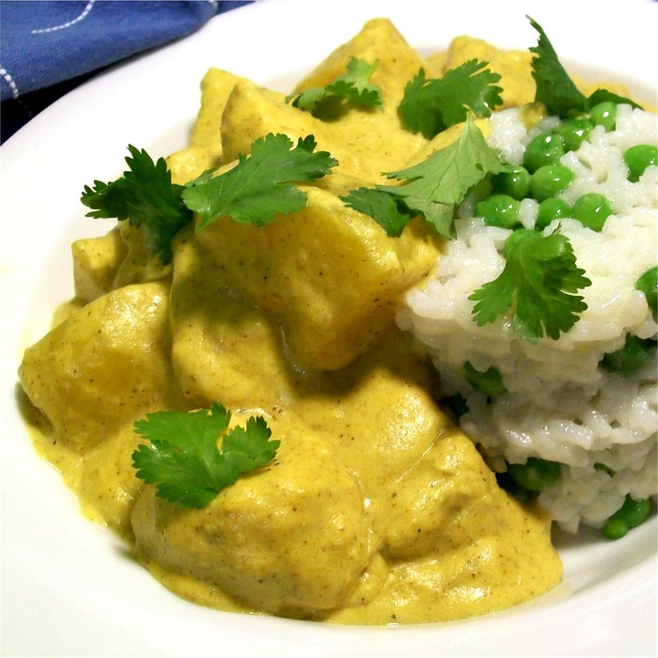

Chicken Curry

Description
Chicken curry with ginger, garlic, coconut milk, yogurt and
potatoes. Malaysian in taste, deep brown in color, and since it
simmers with the potatoes it makes for a complete dish! Serve with
hot cooked rice and other veggies, if desired.
Ingredients
- 3 cloves garlic, crushed
- 3 small onions, minced
- 1 slice fresh ginger root
- 5 tablespoons curry powder
- 5 tablespoons water
- 2 tablespoons olive oil
- 1 cup yogurt
- 1 cup coconut milk
- 1 cup milk
- 1 cup water
- 2 large potatoes, cubed
- 1 (4 pound) whole chicken, cut into 8 pieces
- salt to taste
Steps
-
In a small bowl, grind together garlic, onion and ginger. In a
separate small bowl, mix together curry powder and 5 tablespoons
water.
-
Heat oil in a large skillet over medium high heat. Saute garlic,
ginger and onion until browned; add curry paste and saute
together until smell is strong and fragrant.
-
Add yogurt, coconut milk and regular milk along with 1 cup of
water, and stir all together. Then add potatoes and chicken and
bring to a boil; reduce heat and simmer until potatoes are
tender and chicken is cooked through, about 20 to 25 minutes.
-
Season with salt to taste and simmer for another 2 minutes; the
curry is ready!
Go back